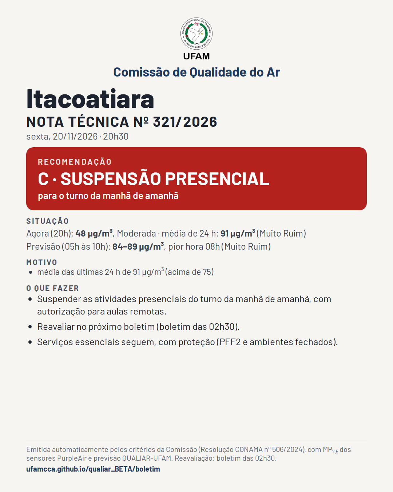
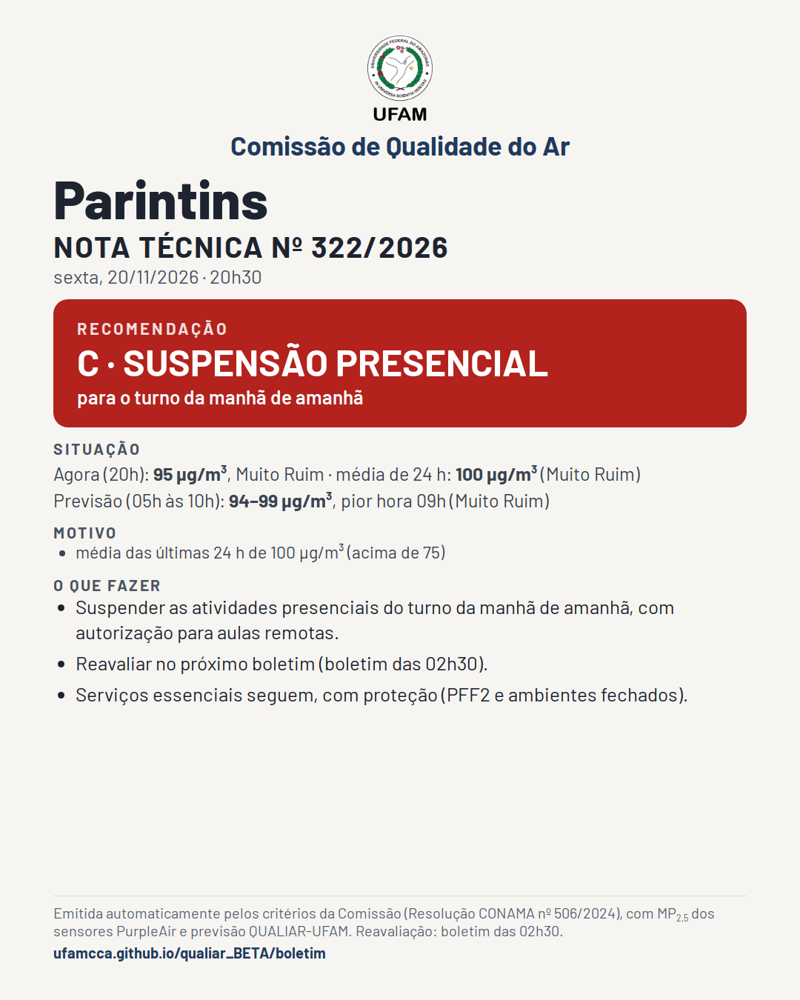
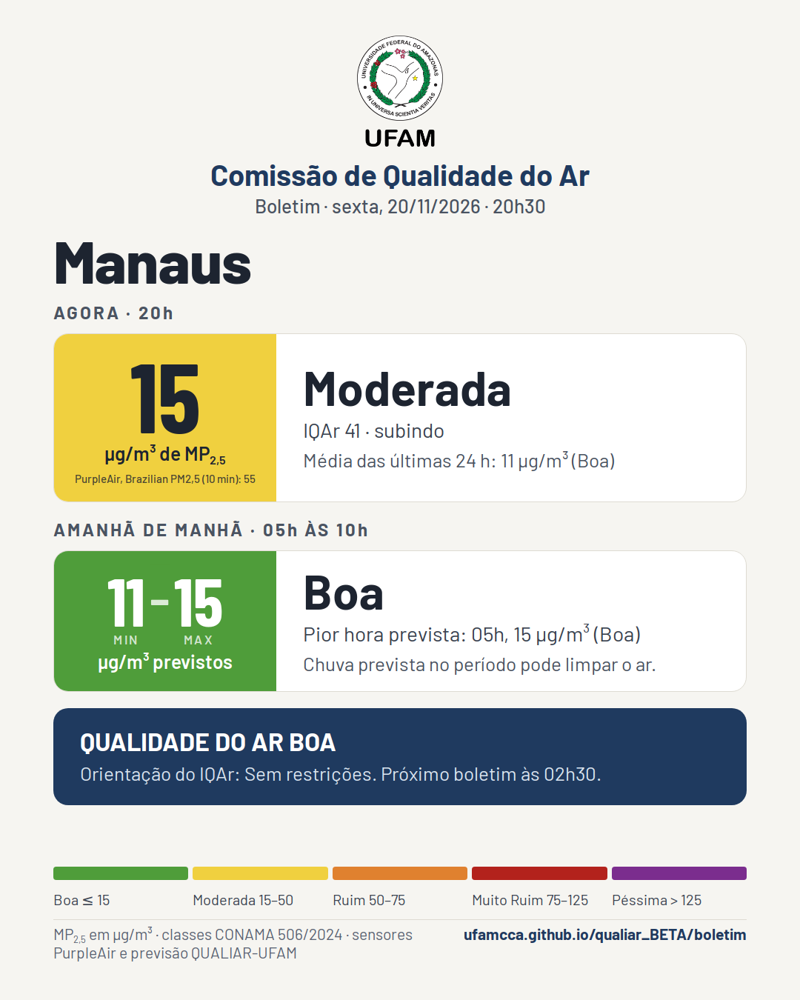
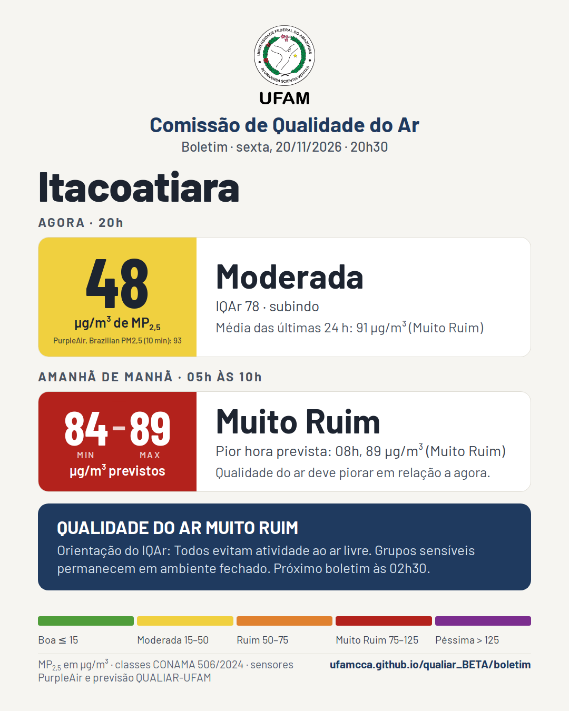
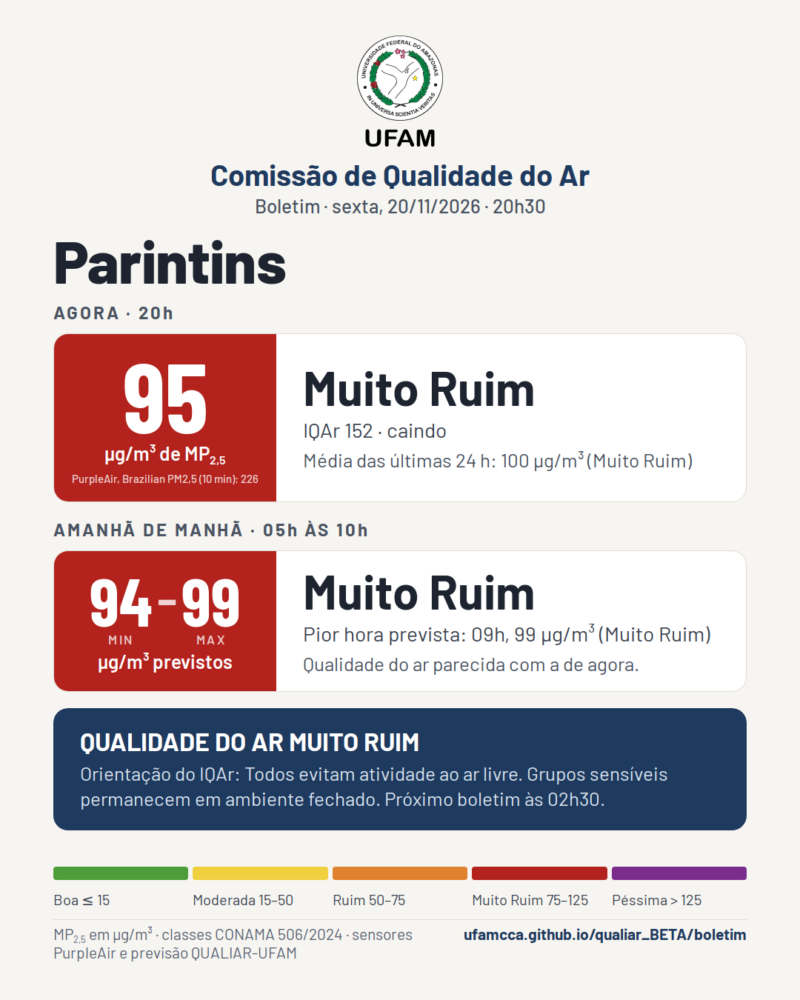
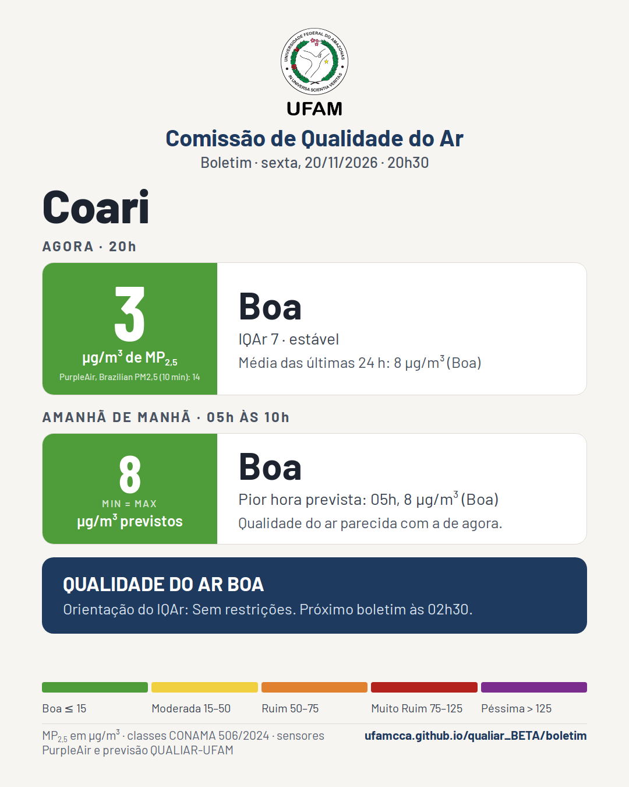
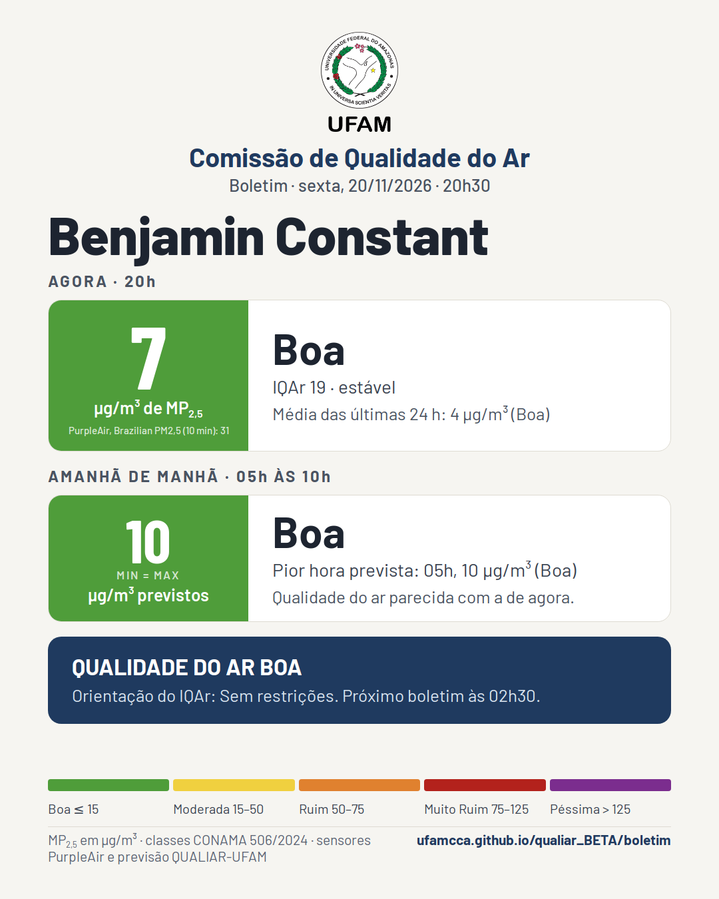

Boletim da qualidade do ar
Comissão de Qualidade do Ar da UFAM · edição de sexta, 20/11/2026, 20h30 · previsão hora a hora no QUALIAR-UFAM
Notas técnicas desta edição




Boletim











A Comissão emite nota técnica para a cidade só quando a recomendação é B (atividades com restrição) ou C (suspensão presencial). Valores de material particulado fino (MP2,5) em µg/m³, mediana dos sensores PurpleAir de cada cidade (correção EPA), classes da Resolução CONAMA nº 506/2024. A previsão é a versão publicada do modelo QUALIAR-UFAM. Boletins às 20h30, 02h30, 08h30 e 14h30. Toque na imagem para abrir em tamanho cheio e compartilhar.
Boletins anteriores
- 20/11/2026 20h30 · Manaus: agora 15 (Moderada) → 11–15 (Boa) · Itacoatiara: agora 48 (Moderada) → 84–89 (Muito Ruim) · Parintins: agora 95 (Muito Ruim) → 94–99 (Muito Ruim) · Humaitá: agora 4 (Boa) → 12–13 (Boa) · Coari: agora 3 (Boa) → 8 (Boa) · Benjamin Constant: agora 7 (Boa) → 10 (Boa) · Nota 321/2026: Itacoatiara, C · SUSPENSÃO PRESENCIAL · Nota 322/2026: Parintins, C · SUSPENSÃO PRESENCIAL
- 20/11/2026 14h30 · Manaus: agora 11 (Boa) → 13–14 (Boa) · Itacoatiara: agora 91 (Muito Ruim) → 120–126 (Péssima) · Parintins: agora 88 (Muito Ruim) → 96–104 (Muito Ruim) · Humaitá: agora 21 (Moderada) → 21–22 (Moderada) · Coari: agora 4 (Boa) → 9–10 (Boa) · Benjamin Constant: agora 5 (Boa) → 8–9 (Boa) · Nota 319/2026: Itacoatiara, C · SUSPENSÃO PRESENCIAL · Nota 320/2026: Parintins, C · SUSPENSÃO PRESENCIAL
- 20/11/2026 08h30 · Manaus: agora 10 (Boa) → 13–15 (Boa) · Itacoatiara: agora 38 (Moderada) → 51–71 (Ruim) · Parintins: agora 63 (Ruim) → 96–121 (Muito Ruim) · Humaitá: agora 11 (Boa) → 15–18 (Moderada) · Coari: agora 3 (Boa) → 14–18 (Moderada) · Benjamin Constant: agora 2 (Boa) → 8 (Boa) · Nota 317/2026: Itacoatiara, C · SUSPENSÃO PRESENCIAL · Nota 318/2026: Parintins, C · SUSPENSÃO PRESENCIAL
- 20/11/2026 02h30 · Manaus: agora 12 (Boa) → 11–17 (Boa) · Itacoatiara: agora 69 (Ruim) → 24–63 (Moderada) · Parintins: agora 89 (Muito Ruim) → 121–150 (Péssima) · Humaitá: agora 13 (Boa) → 16–19 (Moderada) · Coari: agora 14 (Boa) → 18–22 (Moderada) · Benjamin Constant: agora 2 (Boa) → 8 (Boa) · Nota 315/2026: Itacoatiara, C · SUSPENSÃO PRESENCIAL · Nota 316/2026: Parintins, C · SUSPENSÃO PRESENCIAL
- 19/11/2026 20h30 · Manaus: agora 12 (Boa) → 11–22 (Boa) · Itacoatiara: agora 128 (Péssima) → 10–45 (Moderada) · Parintins: agora 142 (Péssima) → 117–200 (Péssima) · Humaitá: agora 15 (Boa) → 21–22 (Moderada) · Coari: agora 13 (Boa) → 12–23 (Moderada) · Benjamin Constant: agora 3 (Boa) → 8 (Boa) · Nota 312/2026: Manaus, B · ATIVIDADES COM RESTRIÇÃO · Nota 313/2026: Itacoatiara, C · SUSPENSÃO PRESENCIAL · Nota 314/2026: Parintins, C · SUSPENSÃO PRESENCIAL
- 19/11/2026 14h30 · Manaus: agora 19 (Moderada) → 13–37 (Moderada) · Itacoatiara: agora 117 (Muito Ruim) → 9–113 (Ruim) · Parintins: agora 153 (Péssima) → 61–209 (Muito Ruim) · Humaitá: agora 23 (Moderada) → 15–28 (Moderada) · Coari: agora 56 (Ruim) → 30–41 (Moderada) · Benjamin Constant: agora 3 (Boa) → 8 (Boa) · Nota 308/2026: Manaus, B · ATIVIDADES COM RESTRIÇÃO · Nota 309/2026: Itacoatiara, C · SUSPENSÃO PRESENCIAL · Nota 310/2026: Parintins, C · SUSPENSÃO PRESENCIAL · Nota 311/2026: Coari, B · ATIVIDADES COM RESTRIÇÃO
- 19/11/2026 08h30 · Manaus: agora 93 (Muito Ruim) → 44–77 (Ruim) · Itacoatiara: agora 120 (Muito Ruim) → 53–98 (Muito Ruim) · Parintins: agora 150 (Péssima) → 97–171 (Péssima) · Humaitá: agora 33 (Moderada) → 21–36 (Moderada) · Coari: agora 44 (Moderada) → 29–41 (Moderada) · Benjamin Constant: agora 4 (Boa) → 9 (Boa) · Nota 304/2026: Manaus, B · ATIVIDADES COM RESTRIÇÃO · Nota 305/2026: Itacoatiara, C · SUSPENSÃO PRESENCIAL · Nota 306/2026: Parintins, C · SUSPENSÃO PRESENCIAL · Nota 307/2026: Coari, B · ATIVIDADES COM RESTRIÇÃO
- 19/11/2026 02h30 · Manaus: agora 83 (Muito Ruim) → 82–92 (Muito Ruim) · Itacoatiara: agora 127 (Péssima) → 115–126 (Muito Ruim) · Parintins: agora 801 (Péssima) → 804–967 (Péssima) · Humaitá: agora 6 (Boa) → 8–9 (Boa) · Coari: agora 8 (Boa) → 9 (Boa) · Benjamin Constant: agora 2 (Boa) → 8 (Boa) · Nota 301/2026: Manaus, B · ATIVIDADES COM RESTRIÇÃO · Nota 302/2026: Itacoatiara, C · SUSPENSÃO PRESENCIAL · Nota 303/2026: Parintins, C · SUSPENSÃO PRESENCIAL
- 18/11/2026 20h30 · Manaus: agora 16 (Moderada) → 20 (Moderada) · Itacoatiara: agora 97 (Muito Ruim) → 98–113 (Muito Ruim) · Parintins: agora 119 (Muito Ruim) → 94–118 (Muito Ruim) · Humaitá: agora 6 (Boa) → 10 (Boa) · Coari: agora 11 (Boa) → 12–14 (Boa) · Benjamin Constant: agora 13 (Boa) → 15 (Moderada) · Nota 299/2026: Itacoatiara, C · SUSPENSÃO PRESENCIAL · Nota 300/2026: Parintins, C · SUSPENSÃO PRESENCIAL
- 18/11/2026 14h30 · Manaus: agora 8 (Boa) → 11–14 (Boa) · Itacoatiara: agora 70 (Ruim) → 85–86 (Muito Ruim) · Parintins: agora 51 (Ruim) → 71–112 (Muito Ruim) · Humaitá: agora 8 (Boa) → 9 (Boa) · Coari: agora 5 (Boa) → 8 (Boa) · Benjamin Constant: agora 5 (Boa) → 8 (Boa) · Nota 297/2026: Itacoatiara, B · ATIVIDADES COM RESTRIÇÃO · Nota 298/2026: Parintins, C · SUSPENSÃO PRESENCIAL
- 18/11/2026 08h30 · Manaus: agora 23 (Moderada) → 24–30 (Moderada) · Itacoatiara: agora 121 (Muito Ruim) → 86–98 (Muito Ruim) · Parintins: agora 184 (Péssima) → 115–173 (Péssima) · Humaitá: agora 8 (Boa) → 9 (Boa) · Coari: agora 5 (Boa) → 8 (Boa) · Benjamin Constant: agora 4 (Boa) → 8 (Boa) · Nota 295/2026: Itacoatiara, B · ATIVIDADES COM RESTRIÇÃO · Nota 296/2026: Parintins, C · SUSPENSÃO PRESENCIAL
- 18/11/2026 02h30 · Manaus: agora 12 (Boa) → 9–11 (Boa) · Itacoatiara: agora 100 (Muito Ruim) → 64–98 (Muito Ruim) · Parintins: agora 137 (Péssima) → 93–106 (Muito Ruim) · Humaitá: agora 7 (Boa) → 8–9 (Boa) · Coari: agora 5 (Boa) → 8 (Boa) · Benjamin Constant: agora 6 (Boa) → 8 (Boa) · Nota 293/2026: Itacoatiara, B · ATIVIDADES COM RESTRIÇÃO · Nota 294/2026: Parintins, C · SUSPENSÃO PRESENCIAL
- 17/11/2026 20h30 · Manaus: agora 9 (Boa) → 9–10 (Boa) · Itacoatiara: agora 63 (Ruim) → 43–78 (Ruim) · Parintins: agora 71 (Ruim) → 74–91 (Muito Ruim) · Humaitá: agora 14 (Boa) → 14 (Boa) · Coari: agora 17 (Moderada) → 12–21 (Moderada) · Benjamin Constant: agora 8 (Boa) → 9 (Boa) · Nota 291/2026: Itacoatiara, B · ATIVIDADES COM RESTRIÇÃO · Nota 292/2026: Parintins, C · SUSPENSÃO PRESENCIAL
- 17/11/2026 14h30 · Manaus: agora 8 (Boa) → 10–11 (Boa) · Itacoatiara: agora 9 (Boa) → 18–28 (Moderada) · Parintins: agora 40 (Moderada) → 68–90 (Muito Ruim) · Humaitá: agora 9 (Boa) → 9 (Boa) · Coari: agora 12 (Boa) → 16 (Moderada) · Benjamin Constant: agora 5 (Boa) → 8 (Boa) · Nota 290/2026: Parintins, C · SUSPENSÃO PRESENCIAL
- 17/11/2026 08h30 · Manaus: agora 9 (Boa) → 12 (Boa) · Itacoatiara: agora 47 (Moderada) → 38–40 (Moderada) · Parintins: agora 68 (Ruim) → 75–84 (Muito Ruim) · Humaitá: agora 11 (Boa) → 11 (Boa) · Coari: agora 7 (Boa) → 9–10 (Boa) · Benjamin Constant: agora 4 (Boa) → 8 (Boa) · Nota 289/2026: Parintins, C · SUSPENSÃO PRESENCIAL
- 17/11/2026 02h30 · Manaus: agora 16 (Moderada) → 14–17 (Moderada) · Itacoatiara: agora 62 (Ruim) → 45–63 (Moderada) · Parintins: agora 164 (Péssima) → 122–144 (Péssima) · Humaitá: agora 8 (Boa) → 9–10 (Boa) · Coari: agora 10 (Boa) → 11–12 (Boa) · Benjamin Constant: agora 7 (Boa) → 9 (Boa) · Nota 287/2026: Itacoatiara, B · ATIVIDADES COM RESTRIÇÃO · Nota 288/2026: Parintins, C · SUSPENSÃO PRESENCIAL
- 16/11/2026 20h30 · Manaus: agora 11 (Boa) → 13 (Boa) · Itacoatiara: agora 28 (Moderada) → 10–21 (Boa) · Parintins: agora 151 (Péssima) → 170–186 (Péssima) · Humaitá: agora 8 (Boa) → 9 (Boa) · Coari: agora 13 (Boa) → 11–12 (Boa) · Benjamin Constant: agora 9 (Boa) → 11 (Boa) · Nota 286/2026: Parintins, C · SUSPENSÃO PRESENCIAL
- 16/11/2026 14h30 · Manaus: agora 10 (Boa) → 11–13 (Boa) · Itacoatiara: agora 11 (Boa) → 20–32 (Moderada) · Parintins: agora 11 (Boa) → 36–60 (Ruim) · Humaitá: agora 12 (Boa) → 10 (Boa) · Coari: agora 10 (Boa) → 10 (Boa) · Benjamin Constant: agora 4 (Boa) → 8 (Boa) · Nota 285/2026: Parintins, C · SUSPENSÃO PRESENCIAL
- 16/11/2026 08h30 · Manaus: agora 14 (Boa) → 14–16 (Boa) · Itacoatiara: agora 38 (Moderada) → 42–50 (Moderada) · Parintins: agora 58 (Ruim) → 55–70 (Ruim) · Humaitá: agora 11 (Boa) → 12 (Boa) · Coari: agora 8 (Boa) → 9–10 (Boa) · Benjamin Constant: agora 4 (Boa) → 8–9 (Boa) · Nota 283/2026: Itacoatiara, B · ATIVIDADES COM RESTRIÇÃO · Nota 284/2026: Parintins, C · SUSPENSÃO PRESENCIAL
- 16/11/2026 02h30 · Manaus: agora 12 (Boa) → 14–17 (Moderada) · Itacoatiara: agora 75 (Ruim) → 53–90 (Muito Ruim) · Parintins: agora 137 (Péssima) → 100–172 (Péssima) · Humaitá: agora 7 (Boa) → 9–10 (Boa) · Coari: agora 8 (Boa) → 9–10 (Boa) · Benjamin Constant: agora 3 (Boa) → 8 (Boa) · Nota 281/2026: Itacoatiara, C · SUSPENSÃO PRESENCIAL · Nota 282/2026: Parintins, B · ATIVIDADES COM RESTRIÇÃO
- 15/11/2026 20h30 · Manaus: agora 16 (Moderada) → 28–33 (Moderada) · Itacoatiara: agora 53 (Ruim) → 64–95 (Muito Ruim) · Parintins: agora 30 (Moderada) → 41–45 (Moderada) · Humaitá: agora 9 (Boa) → 11–12 (Boa) · Coari: agora 10 (Boa) → 12–13 (Boa) · Benjamin Constant: agora 5 (Boa) → 8 (Boa) · Nota 280/2026: Itacoatiara, C · SUSPENSÃO PRESENCIAL
- 15/11/2026 14h30 · Manaus: agora 16 (Moderada) → 34–45 (Moderada) · Itacoatiara: agora 71 (Ruim) → 36–106 (Muito Ruim) · Parintins: agora 17 (Moderada) → 27–92 (Ruim) · Humaitá: agora 19 (Moderada) → 17–19 (Moderada) · Coari: agora 14 (Boa) → 14–16 (Moderada) · Benjamin Constant: agora 5 (Boa) → 8 (Boa) · Nota 278/2026: Itacoatiara, C · SUSPENSÃO PRESENCIAL · Nota 279/2026: Parintins, B · ATIVIDADES COM RESTRIÇÃO
- 15/11/2026 08h30 · Manaus: agora 25 (Moderada) → 32–36 (Moderada) · Itacoatiara: agora 147 (Péssima) → 153–166 (Péssima) · Parintins: agora 62 (Ruim) → 229–400 (Péssima) · Humaitá: agora 9 (Boa) → 9–10 (Boa) · Coari: agora 11 (Boa) → 14–15 (Boa) · Benjamin Constant: agora 2 (Boa) → 8 (Boa) · Nota 275/2026: Manaus, B · ATIVIDADES COM RESTRIÇÃO · Nota 276/2026: Itacoatiara, C · SUSPENSÃO PRESENCIAL · Nota 277/2026: Parintins, C · SUSPENSÃO PRESENCIAL
- 15/11/2026 02h30 · Manaus: agora 70 (Ruim) → 65–69 (Ruim) · Itacoatiara: agora 145 (Péssima) → 150–156 (Péssima) · Parintins: agora 69 (Ruim) → 401–748 (Péssima) · Humaitá: agora 7 (Boa) → 8 (Boa) · Coari: agora 10 (Boa) → 12–13 (Boa) · Benjamin Constant: agora 4 (Boa) → 8 (Boa) · Nota 272/2026: Manaus, B · ATIVIDADES COM RESTRIÇÃO · Nota 273/2026: Itacoatiara, C · SUSPENSÃO PRESENCIAL · Nota 274/2026: Parintins, C · SUSPENSÃO PRESENCIAL
- 14/11/2026 20h30 · Manaus: agora 57 (Ruim) → 59–62 (Ruim) · Itacoatiara: agora 182 (Péssima) → 189–204 (Péssima) · Parintins: agora 51 (Ruim) → 839–1046 (Péssima) · Humaitá: agora 9 (Boa) → 8 (Boa) · Coari: agora 41 (Moderada) → 32–33 (Moderada) · Benjamin Constant: agora 4 (Boa) → 9 (Boa) · Nota 269/2026: Manaus, B · ATIVIDADES COM RESTRIÇÃO · Nota 270/2026: Itacoatiara, C · SUSPENSÃO PRESENCIAL · Nota 271/2026: Parintins, C · SUSPENSÃO PRESENCIAL
- 14/11/2026 14h30 · Manaus: agora 61 (Ruim) → 60–62 (Ruim) · Itacoatiara: agora 154 (Péssima) → 112–134 (Muito Ruim) · Parintins: agora 63 (Ruim) → 574–1099 (Péssima) · Humaitá: agora 9 (Boa) → 10 (Boa) · Coari: agora 18 (Moderada) → 44–68 (Ruim) · Benjamin Constant: agora 6 (Boa) → 9–12 (Boa) · Nota 265/2026: Manaus, B · ATIVIDADES COM RESTRIÇÃO · Nota 266/2026: Itacoatiara, C · SUSPENSÃO PRESENCIAL · Nota 267/2026: Parintins, C · SUSPENSÃO PRESENCIAL · Nota 268/2026: Coari, C · SUSPENSÃO PRESENCIAL
- 14/11/2026 08h30 · Manaus: agora 53 (Ruim) → 56–58 (Ruim) · Itacoatiara: agora 106 (Muito Ruim) → 108–115 (Muito Ruim) · Parintins: agora 12929 (Péssima) → 13261–15882 (Péssima) · Humaitá: agora 5 (Boa) → 8–9 (Boa) · Coari: agora 11 (Boa) → 36–56 (Moderada) · Benjamin Constant: agora 4 (Boa) → 9–10 (Boa) · Nota 261/2026: Manaus, B · ATIVIDADES COM RESTRIÇÃO · Nota 262/2026: Itacoatiara, B · ATIVIDADES COM RESTRIÇÃO · Nota 263/2026: Parintins, C · SUSPENSÃO PRESENCIAL · Nota 264/2026: Coari, C · SUSPENSÃO PRESENCIAL
- 14/11/2026 02h30 · Manaus: agora 74 (Ruim) → 69–76 (Ruim) · Itacoatiara: agora 70 (Ruim) → 65–70 (Ruim) · Parintins: agora 585 (Péssima) → 462–554 (Péssima) · Humaitá: agora 3 (Boa) → 9–10 (Boa) · Coari: agora 12 (Boa) → 21–33 (Moderada) · Benjamin Constant: agora 6 (Boa) → 8–10 (Boa) · Nota 257/2026: Manaus, B · ATIVIDADES COM RESTRIÇÃO · Nota 258/2026: Itacoatiara, B · ATIVIDADES COM RESTRIÇÃO · Nota 259/2026: Parintins, C · SUSPENSÃO PRESENCIAL · Nota 260/2026: Coari, C · SUSPENSÃO PRESENCIAL
- 13/11/2026 20h30 · Manaus: agora 62 (Ruim) → 66 (Ruim) · Itacoatiara: agora 72 (Ruim) → 63–68 (Ruim) · Parintins: agora 188 (Péssima) → 247–260 (Péssima) · Humaitá: agora 14 (Boa) → 9–25 (Moderada) · Coari: agora 15 (Moderada) → 20–50 (Moderada) · Benjamin Constant: agora 34 (Moderada) → 22–26 (Moderada) · Nota 253/2026: Manaus, B · ATIVIDADES COM RESTRIÇÃO · Nota 254/2026: Itacoatiara, B · ATIVIDADES COM RESTRIÇÃO · Nota 255/2026: Parintins, C · SUSPENSÃO PRESENCIAL · Nota 256/2026: Coari, C · SUSPENSÃO PRESENCIAL
- 13/11/2026 14h30 · Manaus: agora 54 (Ruim) → 28–55 (Moderada) · Itacoatiara: agora 81 (Muito Ruim) → 74–83 (Muito Ruim) · Parintins: agora 80 (Muito Ruim) → 106–134 (Péssima) · Humaitá: agora 13 (Boa) → 14–15 (Boa) · Coari: agora 18 (Moderada) → 9–19 (Moderada) · Benjamin Constant: agora 9 (Boa) → 8–9 (Boa) · Nota 250/2026: Manaus, B · ATIVIDADES COM RESTRIÇÃO · Nota 251/2026: Itacoatiara, B · ATIVIDADES COM RESTRIÇÃO · Nota 252/2026: Parintins, C · SUSPENSÃO PRESENCIAL
- 13/11/2026 08h30 · Manaus: agora 64 (Ruim) → 62–64 (Ruim) · Itacoatiara: agora 48 (Moderada) → 50–55 (Ruim) · Parintins: agora 163 (Péssima) → 148–153 (Péssima) · Humaitá: agora 14 (Boa) → 14–15 (Boa) · Coari: agora 13 (Boa) → 12–14 (Boa) · Benjamin Constant: agora 6 (Boa) → 8 (Boa) · Nota 247/2026: Manaus, B · ATIVIDADES COM RESTRIÇÃO · Nota 248/2026: Itacoatiara, B · ATIVIDADES COM RESTRIÇÃO · Nota 249/2026: Parintins, C · SUSPENSÃO PRESENCIAL
- 13/11/2026 02h30 · Manaus: agora 65 (Ruim) → 55–66 (Ruim) · Itacoatiara: agora 59 (Ruim) → 20–59 (Moderada) · Parintins: agora 258 (Péssima) → 288–307 (Péssima) · Humaitá: agora 9 (Boa) → 10 (Boa) · Coari: agora 14 (Boa) → 10–15 (Boa) · Benjamin Constant: agora 6 (Boa) → 10–12 (Boa) · Nota 244/2026: Manaus, B · ATIVIDADES COM RESTRIÇÃO · Nota 245/2026: Itacoatiara, B · ATIVIDADES COM RESTRIÇÃO · Nota 246/2026: Parintins, C · SUSPENSÃO PRESENCIAL
- 12/11/2026 20h30 · Manaus: agora 69 (Ruim) → 78–81 (Muito Ruim) · Itacoatiara: agora 50 (Moderada) → 46–54 (Ruim) · Parintins: agora 150 (Péssima) → 172–197 (Péssima) · Humaitá: agora 18 (Moderada) → 17–18 (Moderada) · Coari: agora 20 (Moderada) → 15–23 (Moderada) · Benjamin Constant: agora 5 (Boa) → 8–9 (Boa) · Nota 241/2026: Manaus, B · ATIVIDADES COM RESTRIÇÃO · Nota 242/2026: Itacoatiara, B · ATIVIDADES COM RESTRIÇÃO · Nota 243/2026: Parintins, C · SUSPENSÃO PRESENCIAL
- 12/11/2026 14h30 · Manaus: agora 37 (Moderada) → 43–53 (Moderada) · Itacoatiara: agora 53 (Ruim) → 53–57 (Ruim) · Parintins: agora 80 (Muito Ruim) → 102–126 (Muito Ruim) · Humaitá: agora 10 (Boa) → 11–12 (Boa) · Coari: agora 15 (Boa) → 20–29 (Moderada) · Benjamin Constant: agora 10 (Boa) → 10 (Boa) · Nota 238/2026: Manaus, B · ATIVIDADES COM RESTRIÇÃO · Nota 239/2026: Itacoatiara, B · ATIVIDADES COM RESTRIÇÃO · Nota 240/2026: Parintins, C · SUSPENSÃO PRESENCIAL
- 12/11/2026 08h30 · Manaus: agora 58 (Ruim) → 48–54 (Ruim) · Itacoatiara: agora 44 (Moderada) → 45–50 (Moderada) · Parintins: agora 231 (Péssima) → 168–195 (Péssima) · Humaitá: agora 7 (Boa) → 11–12 (Boa) · Coari: agora 16 (Moderada) → 24–28 (Moderada) · Benjamin Constant: agora 5 (Boa) → 8–9 (Boa) · Nota 235/2026: Manaus, B · ATIVIDADES COM RESTRIÇÃO · Nota 236/2026: Itacoatiara, B · ATIVIDADES COM RESTRIÇÃO · Nota 237/2026: Parintins, C · SUSPENSÃO PRESENCIAL
- 12/11/2026 02h30 · Manaus: agora 58 (Ruim) → 56–58 (Ruim) · Itacoatiara: agora 45 (Moderada) → 52–56 (Ruim) · Parintins: agora 211 (Péssima) → 228–247 (Péssima) · Humaitá: agora 15 (Moderada) → 11–15 (Boa) · Coari: agora 39 (Moderada) → 19–32 (Moderada) · Benjamin Constant: agora 4 (Boa) → 8 (Boa) · Nota 232/2026: Manaus, B · ATIVIDADES COM RESTRIÇÃO · Nota 233/2026: Itacoatiara, B · ATIVIDADES COM RESTRIÇÃO · Nota 234/2026: Parintins, C · SUSPENSÃO PRESENCIAL
- 11/11/2026 20h30 · Manaus: agora 62 (Ruim) → 57–67 (Ruim) · Itacoatiara: agora 51 (Ruim) → 52–53 (Ruim) · Parintins: agora 86 (Muito Ruim) → 132–141 (Péssima) · Humaitá: agora 19 (Moderada) → 14–25 (Moderada) · Coari: agora 36 (Moderada) → 30–36 (Moderada) · Benjamin Constant: agora 7 (Boa) → 8–9 (Boa) · Nota 229/2026: Manaus, B · ATIVIDADES COM RESTRIÇÃO · Nota 230/2026: Itacoatiara, B · ATIVIDADES COM RESTRIÇÃO · Nota 231/2026: Parintins, C · SUSPENSÃO PRESENCIAL
- 11/11/2026 14h30 · Manaus: agora 62 (Ruim) → 59–61 (Ruim) · Itacoatiara: agora 66 (Ruim) → 56–62 (Ruim) · Parintins: agora 42 (Moderada) → 93–146 (Péssima) · Humaitá: agora 13 (Boa) → 17–21 (Moderada) · Coari: agora 53 (Ruim) → 48–52 (Ruim) · Benjamin Constant: agora 7 (Boa) → 10–12 (Boa) · Nota 225/2026: Manaus, B · ATIVIDADES COM RESTRIÇÃO · Nota 226/2026: Itacoatiara, B · ATIVIDADES COM RESTRIÇÃO · Nota 227/2026: Parintins, C · SUSPENSÃO PRESENCIAL · Nota 228/2026: Coari, B · ATIVIDADES COM RESTRIÇÃO
- 11/11/2026 08h30 · Manaus: agora 70 (Ruim) → 57–67 (Ruim) · Itacoatiara: agora 63 (Ruim) → 37–53 (Moderada) · Parintins: agora 90 (Muito Ruim) → 118–147 (Péssima) · Humaitá: agora 22 (Moderada) → 23–24 (Moderada) · Coari: agora 27 (Moderada) → 20–27 (Moderada) · Benjamin Constant: agora 6 (Boa) → 9–10 (Boa) · Nota 222/2026: Manaus, B · ATIVIDADES COM RESTRIÇÃO · Nota 223/2026: Itacoatiara, B · ATIVIDADES COM RESTRIÇÃO · Nota 224/2026: Parintins, C · SUSPENSÃO PRESENCIAL
- 11/11/2026 02h30 · Manaus: agora 46 (Moderada) → 44–48 (Moderada) · Itacoatiara: agora 21 (Moderada) → 25–29 (Moderada) · Parintins: agora 167 (Péssima) → 162–169 (Péssima) · Humaitá: agora 24 (Moderada) → 22–23 (Moderada) · Coari: agora 31 (Moderada) → 27–29 (Moderada) · Benjamin Constant: agora 9 (Boa) → 10 (Boa) · Nota 221/2026: Parintins, C · SUSPENSÃO PRESENCIAL
- 10/11/2026 20h30 · Manaus: agora 61 (Ruim) → 49–52 (Ruim) · Itacoatiara: agora 48 (Moderada) → 60–62 (Ruim) · Parintins: agora 209 (Péssima) → 197–212 (Péssima) · Humaitá: agora 21 (Moderada) → 18 (Moderada) · Coari: agora 37 (Moderada) → 25–28 (Moderada) · Benjamin Constant: agora 37 (Moderada) → 17–24 (Moderada) · Nota 218/2026: Manaus, B · ATIVIDADES COM RESTRIÇÃO · Nota 219/2026: Itacoatiara, B · ATIVIDADES COM RESTRIÇÃO · Nota 220/2026: Parintins, C · SUSPENSÃO PRESENCIAL
- 10/11/2026 14h30 · Manaus: agora 51 (Ruim) → 26–55 (Ruim) · Itacoatiara: agora 31 (Moderada) → 60–70 (Ruim) · Parintins: agora 172 (Péssima) → 176–192 (Péssima) · Humaitá: agora 13 (Boa) → 14–15 (Boa) · Coari: agora 17 (Moderada) → 20–21 (Moderada) · Benjamin Constant: agora 11 (Boa) → 10–12 (Boa) · Nota 215/2026: Manaus, B · ATIVIDADES COM RESTRIÇÃO · Nota 216/2026: Itacoatiara, C · SUSPENSÃO PRESENCIAL · Nota 217/2026: Parintins, C · SUSPENSÃO PRESENCIAL
- 10/11/2026 08h30 · Manaus: agora 38 (Moderada) → 39–43 (Moderada) · Itacoatiara: agora 23 (Moderada) → 44–70 (Ruim) · Parintins: agora 73 (Ruim) → 124–188 (Péssima) · Humaitá: agora 10 (Boa) → 12–14 (Boa) · Coari: agora 12 (Boa) → 14–17 (Moderada) · Benjamin Constant: agora 4 (Boa) → 8–10 (Boa) · Nota 212/2026: Manaus, B · ATIVIDADES COM RESTRIÇÃO · Nota 213/2026: Itacoatiara, C · SUSPENSÃO PRESENCIAL · Nota 214/2026: Parintins, C · SUSPENSÃO PRESENCIAL
- 10/11/2026 02h30 · Manaus: agora 41 (Moderada) → 15–45 (Moderada) · Itacoatiara: agora 105 (Muito Ruim) → 53–109 (Muito Ruim) · Parintins: agora 308 (Péssima) → 240–416 (Péssima) · Humaitá: agora 18 (Moderada) → 20–21 (Moderada) · Coari: agora 12 (Boa) → 18–23 (Moderada) · Benjamin Constant: agora 5 (Boa) → 8 (Boa) · Nota 209/2026: Manaus, B · ATIVIDADES COM RESTRIÇÃO · Nota 210/2026: Itacoatiara, C · SUSPENSÃO PRESENCIAL · Nota 211/2026: Parintins, C · SUSPENSÃO PRESENCIAL
- 09/11/2026 20h30 · Manaus: agora 17 (Moderada) → 52–64 (Ruim) · Itacoatiara: agora 103 (Muito Ruim) → 42–111 (Muito Ruim) · Parintins: agora 384 (Péssima) → 236–586 (Péssima) · Humaitá: agora 49 (Moderada) → 45–50 (Moderada) · Coari: agora 12 (Boa) → 43–44 (Moderada) · Benjamin Constant: agora 11 (Boa) → 9 (Boa) · Nota 205/2026: Manaus, C · SUSPENSÃO PRESENCIAL · Nota 206/2026: Itacoatiara, C · SUSPENSÃO PRESENCIAL · Nota 207/2026: Parintins, C · SUSPENSÃO PRESENCIAL · Nota 208/2026: Humaitá, B · ATIVIDADES COM RESTRIÇÃO
- 09/11/2026 14h30 · Manaus: agora 59 (Ruim) → 57–81 (Ruim) · Itacoatiara: agora 156 (Péssima) → 21–165 (Péssima) · Parintins: agora 125 (Péssima) → 115–444 (Péssima) · Humaitá: agora 16 (Moderada) → 20–23 (Moderada) · Coari: agora 41 (Moderada) → 41–56 (Ruim) · Benjamin Constant: agora 12 (Boa) → 10–12 (Boa) · Nota 201/2026: Manaus, C · SUSPENSÃO PRESENCIAL · Nota 202/2026: Itacoatiara, C · SUSPENSÃO PRESENCIAL · Nota 203/2026: Parintins, C · SUSPENSÃO PRESENCIAL · Nota 204/2026: Coari, B · ATIVIDADES COM RESTRIÇÃO
- 09/11/2026 08h30 · Manaus: agora 85 (Muito Ruim) → 80–98 (Muito Ruim) · Itacoatiara: agora 91 (Muito Ruim) → 88–110 (Muito Ruim) · Parintins: agora 672 (Péssima) → 540–597 (Péssima) · Humaitá: agora 13 (Boa) → 18–22 (Moderada) · Coari: agora 87 (Muito Ruim) → 70–86 (Muito Ruim) · Benjamin Constant: agora 3 (Boa) → 8 (Boa) · Nota 197/2026: Manaus, C · SUSPENSÃO PRESENCIAL · Nota 198/2026: Itacoatiara, C · SUSPENSÃO PRESENCIAL · Nota 199/2026: Parintins, C · SUSPENSÃO PRESENCIAL · Nota 200/2026: Coari, B · ATIVIDADES COM RESTRIÇÃO
- 09/11/2026 02h30 · Manaus: agora 79 (Muito Ruim) → 107–111 (Muito Ruim) · Itacoatiara: agora 108 (Muito Ruim) → 119–131 (Péssima) · Parintins: agora 1444 (Péssima) → 1040–1296 (Péssima) · Humaitá: agora 12 (Boa) → 19–26 (Moderada) · Coari: agora 63 (Ruim) → 21–59 (Moderada) · Benjamin Constant: agora 4 (Boa) → 8 (Boa) · Nota 193/2026: Manaus, C · SUSPENSÃO PRESENCIAL · Nota 194/2026: Itacoatiara, C · SUSPENSÃO PRESENCIAL · Nota 195/2026: Parintins, C · SUSPENSÃO PRESENCIAL · Nota 196/2026: Coari, B · ATIVIDADES COM RESTRIÇÃO
- 08/11/2026 20h30 · Manaus: agora 126 (Péssima) → 98–128 (Péssima) · Itacoatiara: agora 229 (Péssima) → 206–282 (Péssima) · Parintins: agora 81 (Muito Ruim) → 230–268 (Péssima) · Humaitá: agora 20 (Moderada) → 41–42 (Moderada) · Coari: agora 71 (Ruim) → 36–64 (Ruim) · Benjamin Constant: agora 17 (Moderada) → 13–17 (Boa) · Nota 189/2026: Manaus, C · SUSPENSÃO PRESENCIAL · Nota 190/2026: Itacoatiara, C · SUSPENSÃO PRESENCIAL · Nota 191/2026: Parintins, C · SUSPENSÃO PRESENCIAL · Nota 192/2026: Coari, B · ATIVIDADES COM RESTRIÇÃO
- 08/11/2026 14h30 · Manaus: agora 101 (Muito Ruim) → 92–96 (Muito Ruim) · Itacoatiara: agora 87 (Muito Ruim) → 128–171 (Péssima) · Parintins: agora 58 (Ruim) → 175–287 (Péssima) · Humaitá: agora 54 (Ruim) → 38–45 (Moderada) · Coari: agora 50 (Moderada) → 36–40 (Moderada) · Benjamin Constant: agora 10 (Boa) → 11–14 (Boa) · Nota 185/2026: Manaus, C · SUSPENSÃO PRESENCIAL · Nota 186/2026: Itacoatiara, C · SUSPENSÃO PRESENCIAL · Nota 187/2026: Parintins, C · SUSPENSÃO PRESENCIAL · Nota 188/2026: Humaitá, B · ATIVIDADES COM RESTRIÇÃO
- 08/11/2026 08h30 · Manaus: agora 58 (Ruim) → 62–73 (Ruim) · Itacoatiara: agora 177 (Péssima) → 199–216 (Péssima) · Parintins: agora 404 (Péssima) → 353–367 (Péssima) · Humaitá: agora 30 (Moderada) → 28–30 (Moderada) · Coari: agora 22 (Moderada) → 26–30 (Moderada) · Benjamin Constant: agora 7 (Boa) → 10–11 (Boa) · Nota 182/2026: Manaus, C · SUSPENSÃO PRESENCIAL · Nota 183/2026: Itacoatiara, C · SUSPENSÃO PRESENCIAL · Nota 184/2026: Parintins, C · SUSPENSÃO PRESENCIAL
- 08/11/2026 02h30 · Manaus: agora 85 (Muito Ruim) → 85 (Muito Ruim) · Itacoatiara: agora 115 (Muito Ruim) → 130–148 (Péssima) · Parintins: agora 349 (Péssima) → 338–351 (Péssima) · Humaitá: agora 22 (Moderada) → 24–26 (Moderada) · Coari: agora 22 (Moderada) → 18–28 (Moderada) · Benjamin Constant: agora 15 (Moderada) → 10–12 (Boa) · Nota 179/2026: Manaus, C · SUSPENSÃO PRESENCIAL · Nota 180/2026: Itacoatiara, C · SUSPENSÃO PRESENCIAL · Nota 181/2026: Parintins, C · SUSPENSÃO PRESENCIAL
- 07/11/2026 20h30 · Manaus: agora 100 (Muito Ruim) → 94–98 (Muito Ruim) · Itacoatiara: agora 207 (Péssima) → 162–172 (Péssima) · Parintins: agora 249 (Péssima) → 443–465 (Péssima) · Humaitá: agora 46 (Moderada) → 56–58 (Ruim) · Coari: agora 26 (Moderada) → 40–44 (Moderada) · Benjamin Constant: agora 32 (Moderada) → 17–28 (Moderada) · Nota 175/2026: Manaus, C · SUSPENSÃO PRESENCIAL · Nota 176/2026: Itacoatiara, C · SUSPENSÃO PRESENCIAL · Nota 177/2026: Parintins, C · SUSPENSÃO PRESENCIAL · Nota 178/2026: Humaitá, B · ATIVIDADES COM RESTRIÇÃO
- 07/11/2026 14h30 · Manaus: agora 76 (Muito Ruim) → 73–74 (Ruim) · Itacoatiara: agora 246 (Péssima) → 164–214 (Péssima) · Parintins: agora 170 (Péssima) → 280–373 (Péssima) · Humaitá: agora 54 (Ruim) → 54–61 (Ruim) · Coari: agora 44 (Moderada) → 53–57 (Ruim) · Benjamin Constant: agora 6 (Boa) → 8 (Boa) · Nota 170/2026: Manaus, B · ATIVIDADES COM RESTRIÇÃO · Nota 171/2026: Itacoatiara, C · SUSPENSÃO PRESENCIAL · Nota 172/2026: Parintins, C · SUSPENSÃO PRESENCIAL · Nota 173/2026: Humaitá, B · ATIVIDADES COM RESTRIÇÃO · Nota 174/2026: Coari, B · ATIVIDADES COM RESTRIÇÃO
- 07/11/2026 08h30 · Manaus: agora 72 (Ruim) → 57–65 (Ruim) · Itacoatiara: agora 76 (Muito Ruim) → 70–71 (Ruim) · Parintins: agora 325 (Péssima) → 336–364 (Péssima) · Humaitá: agora 16 (Moderada) → 20–23 (Moderada) · Coari: agora 61 (Ruim) → 50–56 (Ruim) · Benjamin Constant: agora 3 (Boa) → 8 (Boa) · Nota 166/2026: Manaus, B · ATIVIDADES COM RESTRIÇÃO · Nota 167/2026: Itacoatiara, B · ATIVIDADES COM RESTRIÇÃO · Nota 168/2026: Parintins, C · SUSPENSÃO PRESENCIAL · Nota 169/2026: Coari, B · ATIVIDADES COM RESTRIÇÃO
- 07/11/2026 02h30 · Manaus: agora 75 (Ruim) → 65–70 (Ruim) · Itacoatiara: agora 76 (Muito Ruim) → 70–74 (Ruim) · Parintins: agora 667 (Péssima) → 479–579 (Péssima) · Humaitá: agora 52 (Ruim) → 53–57 (Ruim) · Coari: agora 56 (Ruim) → 38–52 (Moderada) · Benjamin Constant: agora 3 (Boa) → 8 (Boa) · Nota 161/2026: Manaus, B · ATIVIDADES COM RESTRIÇÃO · Nota 162/2026: Itacoatiara, B · ATIVIDADES COM RESTRIÇÃO · Nota 163/2026: Parintins, C · SUSPENSÃO PRESENCIAL · Nota 164/2026: Humaitá, B · ATIVIDADES COM RESTRIÇÃO · Nota 165/2026: Coari, B · ATIVIDADES COM RESTRIÇÃO
- 06/11/2026 20h30 · Manaus: agora 74 (Ruim) → 60–65 (Ruim) · Itacoatiara: agora 63 (Ruim) → 50–53 (Ruim) · Parintins: agora 238 (Péssima) → 276–287 (Péssima) · Humaitá: agora 34 (Moderada) → 25–27 (Moderada) · Coari: agora 55 (Ruim) → 36–41 (Moderada) · Benjamin Constant: agora 4 (Boa) → 8 (Boa) · Nota 157/2026: Manaus, B · ATIVIDADES COM RESTRIÇÃO · Nota 158/2026: Itacoatiara, B · ATIVIDADES COM RESTRIÇÃO · Nota 159/2026: Parintins, C · SUSPENSÃO PRESENCIAL · Nota 160/2026: Coari, B · ATIVIDADES COM RESTRIÇÃO
- 06/11/2026 14h30 · Manaus: agora 58 (Ruim) → 41–51 (Moderada) · Itacoatiara: agora 57 (Ruim) → 41–49 (Moderada) · Parintins: agora 138 (Péssima) → 146–149 (Péssima) · Humaitá: agora 25 (Moderada) → 21–24 (Moderada) · Coari: agora 52 (Ruim) → 46–58 (Ruim) · Benjamin Constant: agora 7 (Boa) → 8 (Boa) · Nota 153/2026: Manaus, B · ATIVIDADES COM RESTRIÇÃO · Nota 154/2026: Itacoatiara, B · ATIVIDADES COM RESTRIÇÃO · Nota 155/2026: Parintins, C · SUSPENSÃO PRESENCIAL · Nota 156/2026: Coari, B · ATIVIDADES COM RESTRIÇÃO
- 06/11/2026 08h30 · Manaus: agora 34 (Moderada) → 34–36 (Moderada) · Itacoatiara: agora 45 (Moderada) → 44–46 (Moderada) · Parintins: agora 341 (Péssima) → 282–337 (Péssima) · Humaitá: agora 23 (Moderada) → 28–29 (Moderada) · Coari: agora 16 (Moderada) → 18 (Moderada) · Benjamin Constant: agora 3 (Boa) → 9–10 (Boa) · Nota 152/2026: Parintins, C · SUSPENSÃO PRESENCIAL
- 06/11/2026 02h30 · Manaus: agora 28 (Moderada) → 29 (Moderada) · Itacoatiara: agora 25 (Moderada) → 28–31 (Moderada) · Parintins: agora 88 (Muito Ruim) → 119–151 (Péssima) · Humaitá: agora 11 (Boa) → 14–18 (Moderada) · Coari: agora 12 (Boa) → 13–14 (Boa) · Benjamin Constant: agora 1 (Boa) → 9 (Boa) · Nota 151/2026: Parintins, C · SUSPENSÃO PRESENCIAL